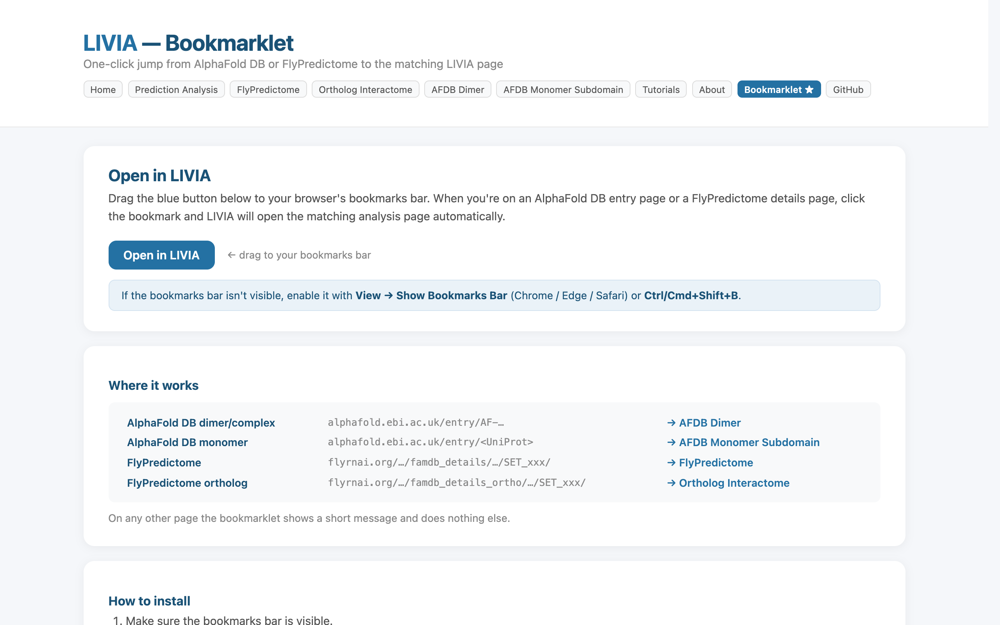
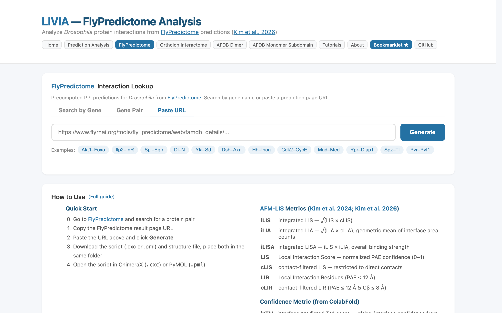
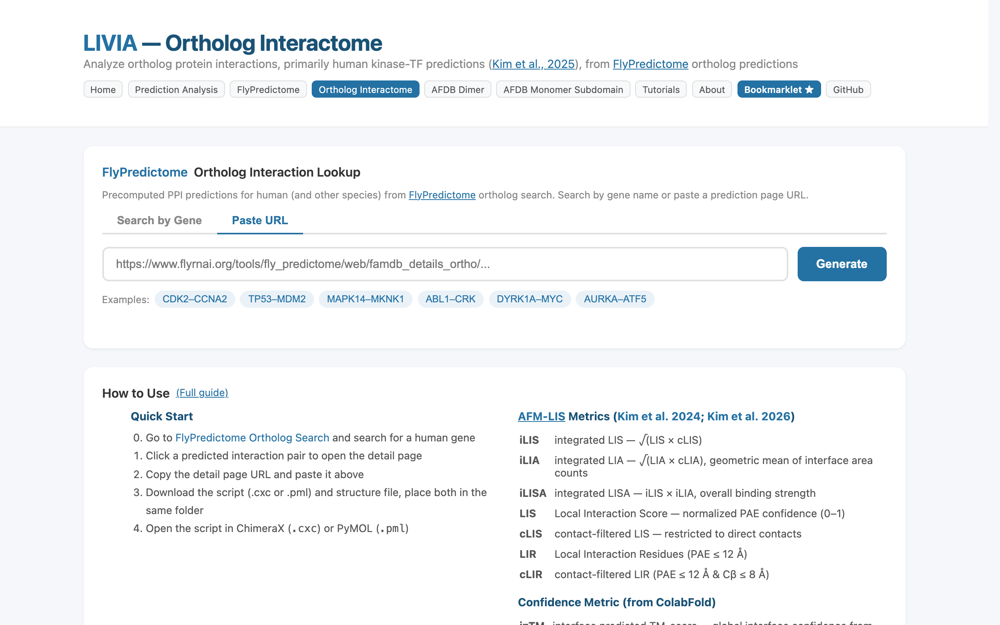
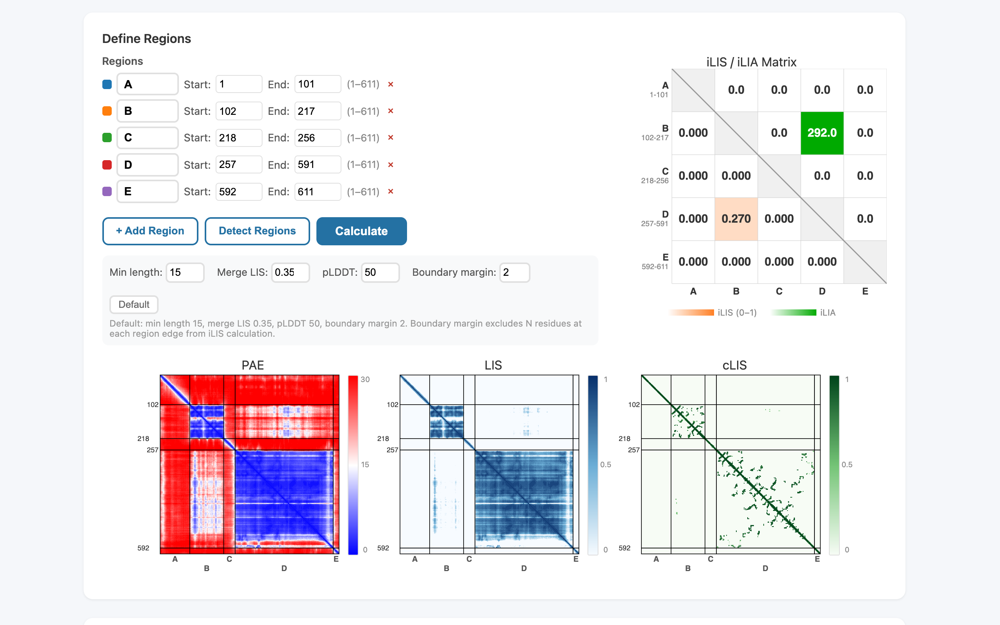

Learn LIVIA by Example
Each tutorial below walks through a real workflow with auto-advancing screenshots. Click any step to jump to it, or let it play through automatically. Ready to try it yourself? Click the Try it button.
Prediction Analysis
Upload prediction files from any platform and analyze interface confidence

Upload prediction files or pick a p53–MDM2 example
AFDB Dimer + Bookmarklet
Jump from any AlphaFold DB dimer page straight into LIVIA analysis

Install the bookmarklet by dragging the blue button to your bookmarks bar
FlyPredictome
Browse Drosophila protein-protein interaction predictions

Search by gene (e.g. Akt1), a gene pair, or paste a FlyPredictome detail URL
Ortholog Interactome
Human/ortholog protein interaction predictions from FlyPredictome ortholog search

Search by gene (e.g. CDK2) or paste an ortholog detail URL
AFDB Monomer Subdomain
Identify intramolecular domain interactions in AlphaFold monomer predictions

Enter a UniProt accession — structure + auto-detected regions appear